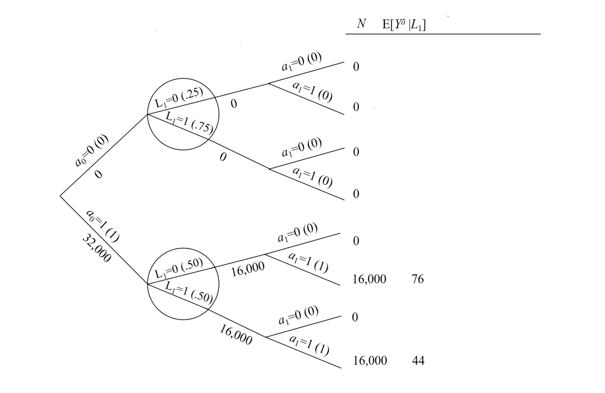

21.1 The g-formula for time-varying treatments
1. Introduction: The Challenge of Time-Varying Treatments
인과추론에서 가장 까다로운 시나리오 중 하나는 시변 처리(Time-varying treatment)가 존재하고, 동시에 처리-교란요인 피드백(Treatment-confounder feedback)이 발생하는 상황입니다.
이전 챕터(Chapter 20)에서 우리는 이러한 구조를 가진 데이터셋에서 전통적인 조정 방법(층화, 회귀분석 등)이 실패한다는 것을 확인했습니다. 설령 실제 인과 효과가 0(Null)이라 할지라도, 전통적인 방법은 편향된 추정치를 내놓습니다.
Chapter 21에서는 이러한 편향을 해결하기 위한 G-Methods의 첫 번째 주자, The G-Formula를 소개합니다. 이 글에서는 G-formula가 어떻게 시변 처리 상황에서 올바른 인과 효과를 식별(Identify)해내는지, 그 수리적 구조와 직관적인 시뮬레이션 관점을 자세히 살펴봅니다.
2. Motivating Example: Sequential Randomized Experiment
- 논의를 구체화하기 위해, Chapter 20에서 사용했던 순차적 무작위 실험(Sequentially Randomized Experiment) 데이터를 다시 가져옵니다.
2.1 The Data Structure
- 이 데이터는 2개의 시점(\(k=0, 1\))을 가집니다.
- \(A_0, A_1\): 처치 여부 (0 또는 1)
- \(L_1\): 시점 1에서 측정된 교란요인 (Confounder)
- \(Y\): 최종 결과 (Outcome)

- 위 표(Table 21.1)를 트리 구조로 시각화하면 데이터의 생성 과정을 더 명확히 이해할 수 있습니다.

2.2 The Problem with Static Adjustment
- 만약 우리가 시점 1의 처치(\(A_1\))에만 관심이 있고, 이것이 고정된(Time-fixed) 처치라면, 우리는 단순히 \(L_1\)에 대해 표준화(Standardization)를 수행하면 됩니다.
\[E[Y^{a_1}] = \sum_{l_1} E[Y|A_1=a_1, L_1=l_1] f(l_1)\]
여기서 \(f(l_1) = Pr[L_1=l_1]\)은 전체 모집단에서의 교란요인 분포입니다. 이 가중 평균(Weighted Average)이 바로 고정된 처치에 대한 G-formula입니다.
하지만, 시변 처리(\(\bar{A} = (A_0, A_1)\)) 상황에서는 문제가 복잡해집니다.
- Feedback: \(A_0\)가 \(L_1\)에 영향을 미칩니다.
- Selection: \(L_1\)이 다시 \(A_1\)에 영향을 미칩니다.
이 경우, 단순한 \(L_1\) 조정은 \(A_0\)의 효과를 가리거나(Over-adjustment), \(L_1\) 자체가 collider가 되어 편향을 유발할 수 있습니다. 따라서 우리는 G-formula를 일반화해야 합니다.
3. The G-Formula for Time-Varying Treatments
3.1 Intuition: Standardization by History
시변 처리에 대한 G-formula의 핵심 아이디어는 “과거의 역사(History)에 조건부로 가중치를 부여한다”는 것입니다.
식별 조건(Identifiability conditions: Sequential Exchangeability, Positivity, Consistency) 하에서, G-formula 추정량은 다음과 같이 정의됩니다:
핵심 개념: G-formula는 연구 모집단의 교란요인 분포로 표준화된 평균 결과를 계산하되, 이 분포는 이전 시점의 처치 및 교란요인 역사에 조건부(Conditional)여야 합니다.
3.2 Mathematical Formulation
1. The G-Formula for 2 Time Points (\(k=0, 1\))
- 시변 처치(Time-varying treatment) 상황에서 2시점 데이터에 대한 G-formula는 다음과 같습니다.
\[E[Y^{a_0, a_1}] = \sum_{l_1} E[Y | A_0=a_0, A_1=a_1, L_1=l_1] \times f(l_1 | A_0=a_0)\]
2. Time-fixed vs. Time-varying Comparison
- 이 식의 확률 부분(\(f\))은 고정된 처치(Time-fixed) 연구와 결정적인 차이가 있습니다.
- Time-fixed (\(f(l)\)): 교란요인 \(L\)이 처치 \(A\)보다 먼저 발생하므로, 처치가 \(L\)의 분포에 영향을 주지 않습니다. 따라서 모집단 전체의 주변 분포(marginal distribution)를 사용합니다.
- Time-varying (\(f(l_1 | a_0)\)): 교란요인 \(L_1\)이 초기 처치 \(A_0\) 이후에 발생합니다. \(A_0\)가 \(L_1\)에 인과적 영향을 주기 때문에, 개입(\(A_0=a_0\))이 있었을 때의 조건부 확률 분포를 사용해야 합니다.
3. Derivation: Why \(f(l_1 | a_0)\)?
이 식은 관찰된 데이터의 결합 분포(Joint Distribution)에서 처치 할당 확률을 제거하는 절단된 분해(Truncated Factorization) 과정을 통해 유도됩니다.
Step 1: Chain Rule (관찰 데이터의 분해)
- 관찰된 변수들의 결합 확률은 다음과 같이 분해됩니다. \[P(Y, A_1, L_1, A_0) = P(Y | A_1, L_1, A_0) \times P(A_1 | L_1, A_0) \times P(L_1 | A_0) \times P(A_0)\]
Step 2: Intervention (개입 및 확률 제거)
- 우리가 강제로 \(A_0=a_0, A_1=a_1\)로 고정(Intervention)하면, 자연적인 처치 할당 확률인 \(P(A_0)\)와 \(P(A_1 | L_1, A_0)\)는 더 이상 유효하지 않으므로 식에서 제거됩니다. 남은 부분은 자연 법칙(교란요인 생성 및 결과 생성)을 따릅니다. \[P(Y^{a_0, a_1}=y, L_1^{a_0}=l_1) = P(Y=y | a_1, l_1, a_0) \times P(L_1=l_1 | a_0)\]
Step 3: Marginalization (평균 계산)
- 위 식을 모든 가능한 \(l_1\)에 대해 합산(또는 적분)하여 \(Y\)의 기대값을 구하면 G-formula가 도출됩니다. \[E[Y^{a_0, a_1}] = \sum_{l_1} \underbrace{E[Y | A_1=a_1, L_1=l_1, A_0=a_0]}_{\text{Outcome Model}} \times \underbrace{f(l_1 | A_0=a_0)}_{\text{Confounder Model}}\]
결론적으로 \(f(l_1)\)이 아닌 \(f(l_1 | a_0)\)를 사용하는 것은, 초기 처치 \(A_0\)가 중간 교란요인 \(L_1\)의 분포를 변화시키는 인과적 흐름을 반영하기 위함입니다.
3.3 Application to the Example
- 이제 위에서 본 데이터를 사용하여 실제 인과 효과를 계산해 봅시다. 우리는 “항상 처치(\(a_0=1, a_1=1\))” 전략과 “전혀 처치 안 함(\(a_0=0, a_1=0\))” 전략을 비교합니다.
Step 1: “전혀 처치 안 함” (\(a_0=0, a_1=0\))
\[ \begin{aligned} E[Y^{0,0}] &= \sum_{l_1} E[Y|A_0=0, A_1=0, L_1=l_1] \times P(L_1=l_1|A_0=0) \\ &= E[Y|0,0, L_1=0]P(L_1=0|A_0=0) + E[Y|0,0, L_1=1]P(L_1=1|A_0=0) \end{aligned} \]
- Figure 21.1(트리)의 데이터를 대입하면:
- \(P(L_1=0|A_0=0) = 0.25\)
- \(P(L_1=1|A_0=0) = 0.75\)
- \(E[Y|0,0,0] = 84\)
- \(E[Y|0,0,1] = 52\)
\[\text{Result} = 84 \times 0.25 + 52 \times 0.75 = 21 + 39 = 60\]
Step 2: “항상 처치” (\(a_0=1, a_1=1\))
\[ \begin{aligned} E[Y^{1,1}] &= \sum_{l_1} E[Y|A_0=1, A_1=1, L_1=l_1] \times P(L_1=l_1|A_0=1) \\ &= E[Y|1,1,0]P(L_1=0|1) + E[Y|1,1,1]P(L_1=1|1) \end{aligned} \]
- 데이터 대입:
- \(P(L_1=0|A_0=1) = 0.50\)
- \(P(L_1=1|A_0=1) = 0.50\)
- \(E[Y|1,1,0] = 76\)
- \(E[Y|1,1,1] = 44\)
\[\text{Result} = 76 \times 0.50 + 44 \times 0.50 = 38 + 22 = 60\]
Step 3: Causal Effect
\[\text{Effect} = E[Y^{1,1}] - E[Y^{0,0}] = 60 - 60 = 0\]
- 전통적인 방법론이 실패했던 것과 달리, G-formula는 정확한 인과 효과인 0(Null)을 성공적으로 추정해냈습니다.
4. G-Formula as a Simulation
G-formula를 이해하는 또 다른 강력한 직관은 시뮬레이션(Simulation)입니다.
순차적 교환가능성(Sequential Exchangeability)이 성립한다면, G-formula는 연구 모집단의 모든 개체가 특정 전략 \(\bar{a}\)를 따랐을 때 관찰되었을 반사실적(Counterfactual) 결과 \(Y^{\bar{a}}\)와 공변량 역사 \(\bar{L}^{\bar{a}}\)의 결합 분포를 시뮬레이션하는 과정으로 볼 수 있습니다.
4.1 Constructing the Counterfactual Tree
- 이 시뮬레이션은 원래의 트리(Figure 21.1)를 수정하여 새로운 반사실적 트리(Counterfactual Tree)를 만드는 것과 같습니다.

- 위 그림(Figure 21.2)은 모든 개체가 \(A_0=1, A_1=1\)을 따랐을 때의 세상을 보여줍니다.
- Treatment Assignment: \(k=0, 1\) 시점의 처치 확률을 1로 할당합니다.
- Covariate & Outcome: 하지만 \(P(L_1=l_1|A_0=a_0)\)와 \(E[Y|A_0=a_0, A_1=a_1, L_1=l_1]\) 값은 원본 모집단의 값을 그대로 가져옵니다.
- 이것이 바로 G-formula가 수학적으로 수행하는 작업입니다.
4.2 Why History Matters (Fine Point 21.1)
G-formula에서 “역사(History)”에 조건부 확률을 구한다고 할 때, 이 역사는 반드시 시간적(Chronological) 순서만을 의미하는 것은 아닙니다.
인과적 구조상 \(A_k\)의 교환가능성을 확보하기 위해 필요한 교란요인들의 집합을 의미합니다.
일반적으로는 시간적 과거가 맞지만, 이론적으로는 미래의 변수라도 교란요인이 될 수 있습니다.
하지만, 단순히 시간적 과거에 있다고 해서 모두 조정하면 안 됩니다. M-bias를 유발하는 변수(Colliders)는 제외해야 합니다.
5. Generalization: High-Dimensional G-Formula
- 현실 세계의 데이터는 훨씬 복잡합니다. 시점 \(K\)까지 다수의 시변 교란요인 \(L_k\)가 존재하는 경우, G-formula는 다음과 같이 일반화됩니다. \[E[Y^{\bar{a}}] = \sum_{\bar{l}} E[Y|\bar{A}=\bar{a}, \bar{L}=\bar{l}] \prod_{k=0}^{K} f(l_k | \bar{a}_{k-1}, \bar{l}_{k-1})\]
- \(\sum_{\bar{l}}\): 가능한 모든 공변량 역사(\(l_0, l_1, \dots, l_K\))에 대한 합입니다.
- \(\prod_{k=0}^{K}\): 각 시점 \(k\)에서, 과거 역사(\(\bar{a}_{k-1}, \bar{l}_{k-1}\))가 주어졌을 때 현재 교란요인(\(l_k\))이 나타날 조건부 확률의 곱입니다.
5.1 The Plug-in G-Formula
- 고차원 데이터에서는 모든 가능한 \(\bar{l}\) 조합에 대해 빈도수를 세는 것이 불가능합니다. 따라서 우리는 모수적 모델(Parametric Models)을 사용해야 합니다.
- Outcome Model: \(E[Y|\bar{A}, \bar{L}]\)을 추정하기 위한 회귀모형 (예: 선형 회귀).
- Covariate Models: 각 시점 \(k\)별로 \(f(l_k|\bar{a}_{k-1}, \bar{l}_{k-1})\)을 추정하기 위한 모델 (예: 로지스틱 회귀).
- 이렇게 추정된 값들을 위 공식에 대입(Plug-in)하여 계산하는 방식을 Parametric G-formula라고 부릅니다.
21.2 IP weighting for time-varying treatments
1. Introduction
이전 장들에서 우리는 고정된 시점의 처치(Time-fixed treatment)에 대한 인과 효과를 추정하기 위해 IP Weighting (Inverse Probability Weighting)을 사용하는 방법을 다루었습니다. 하지만 현실의 데이터, 특히 사회과학이나 의료 데이터는 처치와 교란요인(Confounder)이 시간의 흐름에 따라 변하는 Time-varying 구조를 가집니다.
본 포스트에서는 Hernán & Robins의 What If Chapter 21.2를 바탕으로, 이러한 시변(Time-varying) 환경에서 IP Weighting을 어떻게 일반화할 수 있는지, 그리고 이를 통해 Marginal Structural Model (MSM)을 어떻게 추정하는지 상세히 정리합니다.
2. IP Weighting for Time-Varying Treatments
2.1. Motivation: Why Generalize?
고정된 처치(Time-fixed treatment) \(A\)에 대한 IP Weighting의 핵심 아이디어는 각 개인에게 \(1/f(A|L)\)의 가중치를 부여하여, 교란요인 \(L\)과 처치 \(A\) 사이의 연결을 끊어버리는 가상 모집단(Pseudo-population)을 생성하는 것이었습니다.
처치가 시간 흐름에 따라 \(k=0, 1, \dots, K\) 시점에 걸쳐 이루어지는 경우(\(\bar{A} = (A_0, A_1, \dots, A_K)\)), 우리는 각 시점마다 교란요인 \(\bar{L}_k\)에 의해 처치 확률이 달라지는 상황을 마주하게 됩니다. 따라서 가중치 또한 시간의 흐름에 따른 조건부 확률들의 곱으로 확장되어야 합니다.
2.2. Construction of Weights
- Time-varying treatment \(\bar{A}\)와 Time-varying covariates \(\bar{L}\)이 존재할 때, 가중치는 다음과 같이 정의됩니다.
Non-stabilized Weights (\(W^{\bar{A}}\))
- 비안정화 가중치는 각 시점 \(k\)에서 관측된 과거 이력(\(\bar{A}_{k-1}, \bar{L}_k\))이 주어졌을 때, 해당 개인이 실제로 받은 처치(\(A_k\))를 받을 확률의 역수를 누적하여 계산합니다. \[
W^{\bar{A}} = \prod_{k=0}^{K} \frac{1}{f(A_k | \bar{A}_{k-1}, \bar{L}_k)}
\]
- 여기서 \(f(\cdot)\)는 조건부 확률 밀도 함수(또는 질량 함수)를 의미합니다.
Stabilized Weights (\(SW^{\bar{A}}\))
- 비안정화 가중치는 분모의 확률이 매우 작을 경우 가중치가 극단적으로 커져 추정량의 분산(Variance)을 폭발시킬 위험이 있습니다. 이를 방지하기 위해 분자에 처치의 주변 확률(Marginal probability)을 포함한 안정화 가중치를 사용합니다. \[
SW^{\bar{A}} = \prod_{k=0}^{K} \frac{f(A_k | \bar{A}_{k-1})}{f(A_k | \bar{A}_{k-1}, \bar{L}_k)}
\]
- 분모 (Denominator): 과거의 처치 및 교란요인 이력(\(\bar{L}_k\))을 모두 고려했을 때, 현재 처치를 받을 확률. 이는 인과적 연결을 끊는 역할을 합니다.
- 분자 (Numerator): 과거의 처치 이력(\(\bar{A}_{k-1}\))만 고려했을 때, 현재 처치를 받을 확률. 이는 가중치의 변동성을 줄여줍니다.
Important: 안정화 가중치를 사용하더라도 가상 모집단에서의 평균 인과 효과(Average Causal Effect) 추정치는 비안정화 가중치를 사용했을 때와 동일합니다 (Identifiability 조건 하에서). 단, 추정의 효율성(Efficiency) 측면에서 안정화 가중치가 선호됩니다.
2.3. Pseudo-population Interpretation
- 이 가중치들을 적용하여 생성된 가상 모집단에서는 다음과 같은 특성이 성립합니다:
- Non-stabilized: 각 시점 \(k\)에서의 처치 \(A_k\)는 과거 이력과 무관하게 완전히 무작위 할당된 것처럼 동작합니다 (Randomization probability = constant).
- Stabilized: 각 시점 \(k\)에서의 처치 \(A_k\)는 오직 과거 처치 이력 \(\bar{A}_{k-1}\)에만 의존하며, 교란요인 \(\bar{L}_k\)와는 독립이 됩니다.
- 즉, Sequential Unconditional Exchangeability가 성립하게 되어, 연관성(Association)이 곧 인과성(Causation)이 되는 구조가 만들어집니다.
3. Illustration: A Worked Example
- 교재의 Figure 21.3에 제시된 예제를 통해 IP Weighting이 어떻게 작동하는지 구체적으로 살펴보겠습니다.

Setting
- 총 인구: 32,000명
- 우리의 목표: \(E[Y^{a_0=1, a_1=1}]\)과 \(E[Y^{a_0=0, a_1=0}]\)의 차이, 즉 인과 효과를 추정하는 것입니다.
- 데이터 구조: \(L_0\)는 없으며, 시점 \(k=0, 1\)에 대한 처치와 \(L_1\)이 존재합니다.
Calculation
비안정화 가중치를 적용한 가상 모집단에서의 평균 \(E_{ps}[Y | A_0=0, A_1=0]\)을 계산해 봅시다.
- 트리 그래프(Figure 21.3)에서 \((A_0=0, A_1=0)\) 경로를 따르는 모든 개체를 찾습니다.
- 해당 경로의 가중치 \(W\)와 결과값 \(Y\)를 사용하여 가중 평균을 구합니다.
- 계산 결과: \[ E_{ps}[Y | \bar{a}=\bar{0}] = 84 \times \frac{8000}{32000} + 52 \times \frac{24000}{32000} = 21 + 39 = 60 \]
동일한 방식으로 \(E_{ps}[Y | \bar{a}=\bar{1}]\)을 계산하면 역시 60이 나옵니다. 따라서 추정된 인과 효과는 \(60 - 60 = 0\)입니다. 이는 g-formula를 사용했을 때 얻은 결과와 정확히 일치합니다.
Insight: g-formula와 IP Weighting은 Identifiability 조건이 성립하지 않더라도(즉, 인과적 해석이 불가능하더라도) 수치적으로는 동일한 값을 산출합니다. 이는 두 방법론이 동일한 통계적 구조를 공유함을 시사합니다.
4. Marginal Structural Models (MSMs)
4.1. The Curse of Dimensionality
시점이 \(K\)개로 늘어나면 가능한 처치 전략 \(\bar{a}\)의 수는 \(2^K\)개로 기하급수적으로 증가합니다. 데이터가 아무리 많아도 모든 가능한 처치 이력에 대해 평균 \(E[Y^{\bar{a}}]\)를 비모수적(Non-parametric)으로 추정하는 것은 불가능에 가깝습니다.
이를 해결하기 위해 우리는 처치 이력 \(\bar{a}\)를 요약하는 파라메트릭 모델인 Marginal Structural Model (MSM)을 도입합니다.
4.2. Model Specification
- 가장 일반적인 형태는 누적 처치량(Cumulative treatment), \(\text{cum}(\bar{a}) = \sum_{k=0}^K a_k\)에 선형적으로 의존한다고 가정하는 것입니다. \[
E[Y^{\bar{a}}] = \beta_0 + \beta_1 \text{cum}(\bar{a})
\]
- \(\beta_1\): 누적 처치량이 1단위 증가할 때 평균 결과값의 변화량(인과 효과).
- 이 모델은 \(2^K\)개의 미지수를 단 2개의 파라미터(\(\beta_0, \beta_1\))로 축소시킵니다.
4.3. Estimation via Weighted Least Squares (WLS)
- 이 MSM의 파라미터는 관측된 데이터에 대해 IP 가중치(\(SW^{\bar{A}}\))를 적용한 가중 최소 자승법(Weighted Least Squares, WLS)으로 추정할 수 있습니다.
\[ E[Y | \bar{A}] = \theta_0 + \theta_1 \text{cum}(\bar{A}) \quad \text{(Weighted by } SW^{\bar{A}} \text{)} \]
- Identifiability 조건 하에서, WLS로 추정된 \(\hat{\theta}_1\)은 인과 파라미터 \(\beta_1\)에 대해 일치 추정량(Consistent estimator)이 됩니다.
Note on Variance: 추정량의 분산은 Non-parametric Bootstrap을 사용하거나, Robust Variance Estimator(Sandwich estimator)를 통해 구할 수 있습니다. 일반적으로 안정화 가중치(\(SW^{\bar{A}}\))를 사용하면 신뢰구간의 폭이 더 좁아져 효율적입니다.
4.4. Model Misspecification & Diagnostics
만약 실제 인과 효과가 누적 처치량의 제곱에 비례하거나, 특정 시점의 처치에만 의존한다면 위 선형 모델은 Misspecified 된 것입니다.
이를 검증하기 위해 더 복잡한 항(예: \(cum(\bar{A})^2\) 또는 최근 5개월간의 처치량 등)을 모델에 추가하고, 해당 계수들이 0인지 검정(Wald test)하여 모델의 적합성을 평가할 수 있습니다. 다행히 IP Weighting 기반의 MSM은 g-formula와 달리 “g-null paradox”의 영향을 받지 않습니다.
5. Practical Implementation Details
실제 연구(Observational Study)에서는 \(f(A_k | \dots)\)를 알 수 없으므로 데이터를 통해 추정해야 합니다.
- Propensity Score Estimation: 각 시점 \(k\)마다 로지스틱 회귀분석 등을 사용하여 \(Pr[A_k=1 | \bar{A}_{k-1}, \bar{L}_k]\)를 추정합니다.
- 보통은 데이터를 ’Long format’으로 변환한 후, 시간 \(k\)를 공변량으로 포함하여 하나의 통합된 모델(Pooled logistic regression)을 적합합니다.
- Weight Calculation: 추정된 확률 \(\hat{f}\)를 사용하여 \(W^{\bar{A}}\) 또는 \(SW^{\bar{A}}\)를 계산합니다.
- WLS: 계산된 가중치를 적용하여 MSM을 적합합니다.
6. Effect Modification (효과 변경)
- 기본적인 MSM은 전체 인구의 평균적인 인과 효과를 추정하지만, 때로는 “처치의 효과가 특정 집단에서 더 강력하게 나타나는가?”를 확인해야 할 때가 있습니다. 이를 효과 변경(Effect Modification)이라고 합니다.
6.1 Definition of Variable \(V\)
- 정의: \(V\)는 기저 교란요인(Baseline Covariates, \(L_0\)) 중 연구자가 특별히 관심을 갖는 일부 변수의 집합입니다 (예: 성별, 연령대, 유전자 변이 여부 등).
- 조건: \(V\)는 반드시 처치가 시작되기 전인 기저 시점(Time 0)에 측정된 변수여야 합니다. \(k>0\) 시점의 시변 변수를 \(V\)로 사용할 경우, 처치의 결과일 수 있어 해석이 매우 복잡해지거나 불가능해집니다.
6.2 The Model with Interaction
- \(V\)에 따른 효과 차이를 확인하기 위해, MSM에 교차항(Interaction term)을 추가하여 다음과 같이 모델링합니다.
\[ E[Y^{\bar{a}} | V] = \beta_0 + \beta_1 \text{cum}(\bar{a}) + \beta_2 V + \beta_3 \text{cum}(\bar{a})V \]
- 파라미터 해석:
- \(\beta_1\): \(V=0\)인 집단에서의 처치 효과.
- \(\beta_3\): 효과 변경의 크기. 즉, \(V=1\) 집단과 \(V=0\) 집단 간의 처치 효과 차이입니다. (\(\beta_3 \neq 0\)이면 효과 변경이 존재함)
- \(\beta_1 + \beta_3\): \(V=1\)인 집단에서의 처치 효과.
6.3 Estimation with Modified Weights
이 모델을 추정할 때는 \(V\)를 고려하여 수정된 안정화 가중치 \(SW^{\bar{A}}(V)\)를 사용해야 합니다.
가중치의 변화:
- 기존 분자: \(P(A)\) (전체 평균 확률)
- 수정된 분자: \(P(A|V)\) (변수 \(V\)에 따라 조건부로 계산된 확률)
\[SW^{\bar{A}}(V) = \prod_{k=0}^{K} \frac{f(A_k | \bar{A}_{k-1}, V)}{f(A_k | \bar{A}_{k-1}, \bar{L}_k)}\]
- 이점: 모델 식 자체에 이미 \(V\)가 포함되어 있으므로(\(\beta_2 V\)), 가중치를 통해 \(V\)의 교란 효과를 제거할 필요가 없습니다. 따라서 분자에서 \(V\)를 조건부로 잡아줌으로써 가중치의 변동성을 줄이고, 결과적으로 추정의 효율성(Efficiency)을 높여 신뢰구간을 좁힐 수 있습니다.
21.3 A doubly robust estimator for time-varying treatments
1. Introduction: 왜 ’이중 강건’인가?
인과추론, 특히 시변(Time-varying) 처리가 존재하는 복잡한 관찰 연구에서 우리는 보통 두 가지 거대한 방법론의 줄기를 마주합니다.
- IP Weighting (Inverse Probability Weighting): 처리(Treatment) 모형 \(P(A|L)\)을 정확히 맞춰야 함.
- G-formula (Parametric G-formula): 결과(Outcome) 모형 \(E[Y|A, L]\)을 정확히 맞춰야 함.
하지만 현실 데이터에서 모델을 완벽하게 명시(Specification)하는 것은 매우 어렵습니다. 만약 모델이 틀리면 어떻게 될까요? 특히 Parametric G-formula의 경우, “G-null Paradox”라고 불리는 현상이 발생할 수 있습니다. 이는 귀무가설(Null hypothesis)이 참임에도 불구하고, 모델의 오설정(misspecification)만으로 인해 귀무가설을 기각해버리는 편향(Bias)이 발생할 수 있다는 이론적 문제입니다.
여기서 이중 강건 추정량(Doubly Robust Estimator, DR)이 등장합니다. 이름에서 알 수 있듯이, 이 방법은 우리에게 “두 번의 기회(Two chances)”를 줍니다.
핵심 아이디어: 처리 모형(Propensity score) 또는 결과 모형(Outcome regression) 중 하나만이라도 맞으면, 추정값은 일치성(Consistency)을 가집니다.
- 이 글에서는 Hernán & Robins의 What If Chapter 21.3을 바탕으로, 시점 고정(Time-fixed) 상황에서 시작하여 시변(Time-varying) 상황으로 확장되는 DR 추정량의 알고리즘을 상세히 다룹니다.
2. Warm-up: 시점 고정(Time-fixed) 처리에서의 DR
- 복잡한 시변 처리를 다루기 전에, 단일 시점 처리(\(A\))와 결과(\(Y\)), 그리고 교란변수(\(L\))가 있는 상황을 먼저 살펴보겠습니다. Bang and Robins (2005)가 제안한 이 방법론은 이후 시변 처리로 확장되는 기초가 됩니다.
알고리즘 개요
- 우리의 목표는 \(E[Y^{a=1}]\)과 \(E[Y^{a=0}]\)을 추정하여 인과 효과를 구하는 것입니다.
Step 1: 처리 모형 추정 (Propensity Score)
- 먼저, 처리(\(A\))에 대한 확률 모형을 적합합니다. \[ \hat{f}(a|L) \equiv \widehat{Pr}[A=a|L] \]
- 여기서 예측된 확률의 역수를 가중치(Weight)로 사용합니다. 이를 \(\hat{W}^a = \frac{1}{\hat{f}(a|L)}\)라고 정의합시다.
Step 2: 결과 모형 추정 (Clever Covariate)
- 이 단계가 핵심입니다. \(Y\)에 대한 회귀 모형을 적합하되, Step 1에서 구한 가중치 \(\hat{W}^a\)를 공변량(Covariate)으로 추가합니다. \[
b(a, L; \theta) = \text{expit}(\theta_{a,0} + \theta_{a,1}L + \theta_{a,2}\hat{W}^a)
\]
- Note: \(\text{expit}(x) = \frac{e^x}{1+e^x}\)
- 이 회귀식은 \(A=a\)인 집단(실제 처리를 받은 집단)에 대해서만 적합(Fit)합니다.
Step 3: 표준화 (Standardization)
- Step 2에서 구한 회귀 계수 \(\hat{\theta}\)를 사용하여, 전체 표본(Treated + Untreated)에 대해 예측값을 구하고 평균을 냅니다.
\[ \hat{E}[Y^a] = \frac{1}{n} \sum_{i=1}^{n} b(a, L_i; \hat{\theta}) \]
- 이렇게 구한 \(\hat{E}[Y^{a=1}] - \hat{E}[Y^{a=0}]\)은 이중 강건 성질을 가집니다.
3. Time-Varying Treatment로의 확장
이제 시간이 \(k=0, 1, \dots, K\)로 흐르는 동적 상황으로 확장해 봅시다. 우리는 특정 처치 전략 \(\overline{a}\) (예: “항상 처치받음”) 하에서의 반사실적 평균 \(E[Y^{\overline{a}}]\)를 추정하고 싶습니다.
설명의 편의를 위해 “모든 시점에서 처치받음 (\(\overline{a} = \overline{1}\))” 전략을 기준으로 설명합니다.
Step 1: 순차적 처리 모형 (Sequential Treatment Models)
- 모든 시점 \(k\)에 대해 처리 확률 모형 \(\pi_k\)를 적합합니다. \[ \pi_k(\overline{L}_k; \alpha) = Pr[A_k=1 | \overline{A}_{k-1}=\overline{1}_{k-1}, \overline{L}_k] \]
- 이때, \(k-1\) 시점까지 계속 처치를 받은 사람들(\(\overline{A}_{k-1}=\overline{1}_{k-1}\))만을 대상으로 데이터를 풀링(pooling)하여 적합합니다.
시변 가중치 계산
- 각 시점 \(m\)까지 처치받은 사람들을 위한 누적 가중치 \(W^{\overline{1}_m}\)을 계산합니다. 이는 Time-fixed 때와 달리 매 시점마다 누적된 확률의 역수입니다.
\[ \hat{W}^{\overline{1}_m} = \prod_{k=0}^{m} \frac{1}{\hat{\pi}_k(\overline{L}_k)} \]
Step 2: 순차적 결과 모형 (Sequential Outcome Models)
이 부분이 알고리즘적으로 가장 흥미로운 부분입니다. 미래 시점(\(K\))에서 현재 시점(\(0\))으로 시간을 거슬러 올라가는(Backward) 방식을 사용합니다. 이를 흔히 Iterative Conditional Expectation (ICE) 방식이라고도 부릅니다.
각 시점 \(m\) (\(K\)부터 \(0\)까지)에 대해 별도의 회귀 모형 \(b_m\)을 적합합니다.
핵심 로직
- 각 시점 \(m\)의 회귀 모형에는 다음 두 가지가 포함됩니다.
- 공변량: 과거의 이력 \(\overline{L}_m\)
- Clever Covariate: Step 1에서 구한 누적 가중치 \(\hat{W}^{\overline{1}_m}\)
- 종속변수(Target)가 시점마다 달라집니다:
- 마지막 시점 (\(m=K\)): 실제 결과값 \(Y\)가 종속변수입니다.
- 중간 시점 (\(m < K\)): 바로 다음 단계(\(m+1\))에서 예측된 결과값 \(\hat{B}_{m+1}\)이 종속변수가 됩니다.
수식적 표현
- 시점 \(m\)에서의 회귀 모형을 다음과 같이 정의할 수 있습니다 (Binary Outcome의 경우):
\[ b_m(\overline{L}_m; \beta_m) = \text{expit}\left( \gamma_m X_m + \varsigma_m \hat{W}^{\overline{1}_m} \right) \]
- 여기서:
- \(X_m\): 공변량 \(\overline{L}_m\)의 벡터 함수
- \(\hat{W}^{\overline{1}_m}\): 시점 \(m\)까지의 누적 가중치 (Clever Covariate)
- 이 회귀식은 시점 \(m\)까지 처치를 지속한 사람들을 대상으로 적합하며, 이를 통해 예측값 \(\hat{B}_m\)을 생성합니다. 이 \(\hat{B}_m\)은 \(m-1\) 시점 회귀 모형의 종속변수로 사용됩니다.
참고: 예측값 \(\hat{B}_{m+1}\)은 실수가 아니지만, [0, 1] 사이의 값을 가지므로 Logistic 회귀의 종속변수로 사용할 수 있습니다 (Quasi-binomial likelihood 사용).
Step 3: 최종 추정 (Standardization)
Step 2의 역순환 과정을 \(m=0\)까지 완료하면, 우리는 시점 0에서의 예측값 \(\hat{B}_0\)를 얻게 됩니다. \[ \hat{B}_0 = b_0(L_0; \hat{\beta}_0) \]
최종적으로, 전체 표본(모든 개인)에 대해 \(\hat{B}_0\)의 평균을 구합니다.
\[ \hat{E}[Y^{\overline{a}=\overline{1}}] = \frac{1}{n} \sum_{i=1}^{n} \hat{B}_{0,i} \]
- 만약 대조군(예: “항상 처치받지 않음”, \(\overline{a}=\overline{0}\))의 효과도 보고 싶다면, 위 과정을 \(\overline{a}=\overline{0}\)으로 설정하여 반복한 뒤 두 결과의 차이를 구하면 됩니다.
4. 왜 이것이 “강건(Robust)”한가?
- 이 추정량은 단순히 “이중(Doubly)” 강건한 것을 넘어, 다중 강건(Multiply Robust) 또는 \(K+2\) Robustness라는 강력한 성질을 가집니다.
K+2 Robustness의 의미
- 추정량이 일치성(Unbiasedness)을 가지기 위한 조건이 매우 유연합니다. 다음의 조합 중 하나만 성립해도 됩니다:
- 모든 시점 \(m\)에서 결과 모형 \(b_m\)이 정확하게 명시됨.
- 모든 시점 \(m\)에서 처리 모형 \(\pi_k\)가 정확하게 명시됨.
- (가장 강력한 조건) 어떤 시점 \(m\)을 기준으로, \(0 \sim m\)까지는 처리 모형이 맞고, \(m+1 \sim K\)까지는 결과 모형이 맞아도 됨.
- 즉, 전체 기간 동안 모델을 완벽하게 맞추지 못하더라도, 구간별로 모델이 부분적으로 맞다면 여전히 올바른 인과 효과를 추정할 수 있다는 것입니다.
5. Technical Details & Implementation Notes
Boundedness (경계 조건)
- 이 방식(Plug-in Estimator)의 큰 장점 중 하나는 추정값이 항상 [0, 1] 범위 내에 존재한다는 것입니다. 기존의 다른 이중 강건 추정량(예: \(\psi_{TR}\))은 가중치가 불안정할 경우 [0, 1] 범위를 벗어나는 문제가 있었습니다.
TMLE와의 관계
- 이 추정량은 Targeted Minimum Loss-based Estimator (TMLE)의 한 종류입니다. TMLE는 머신러닝 모델을 인과추론에 적용할 때 발생할 수 있는 편향을 수정하는 데 매우 효과적인 프레임워크로, 최근 딥러닝 기반 인과추론에서도 많이 언급됩니다.
Computational Considerations
- 과거에는 이러한 절차가 계산 비용이 높고 소프트웨어가 부족하여 구현이 어려웠으나, 최근에는 머신러닝과 Sample splitting을 결합하여 복잡한 생존 분석(Failure time outcomes) 등에 적용하는 것이 가능해지고 있습니다.
21.4 G-estimation for time-varying treatments
1. Introduction
이전 포스트들에서 우리는 시간 가변적 교란요인(Time-varying confounders)이 존재하는 상황에서 인과 효과를 추정하기 위해 IP Weighting과 G-formula를 다루었습니다. 이번 포스트에서는 이 두 방법론의 대안이자, 특히 효과의 이질성(effect heterogeneity)을 모델링하는 데 강력한 G-estimation과 그 기초가 되는 Structural Nested Mean Models (SNMMs)에 대해 깊이 있게 다룹니다.
G-formula가 결합 밀도(joint density)를 모델링하고 IP Weighting이 처치 확률(treatment assignment)을 모델링한다면, G-estimation은 조건부 인과 효과(conditional causal effect) 자체를 직접 모델링하는 접근 방식입니다.
2. Structural Nested Mean Models (SNMMs)
- G-estimation을 수행하기 위해서는 먼저 인과 효과를 구조화하는 모델이 필요합니다. 이를 Structural Nested Mean Model (SNMM)이라고 합니다.
2.1. The “Blip” Function: 효과의 정의
SNMM은 각 시점 \(k\)에서의 처치 \(A_k\)가 결과 \(Y\)에 미치는 효과를 “Blip”이라는 개념으로 정의합니다. 이는 과거의 처치 이력(\(\bar{a}_{k-1}\))은 고정된 상태에서, 시점 \(k\)에서 처치를 받았을 때(\(a_k\))와 받지 않았을 때(\(0\))의 잠재적 결과(Counterfactual Outcome) 차이를 의미합니다.
가장 일반적인 형태의 SNMM은 다음과 같이 정의됩니다:
\[ E[Y^{\bar{a}_{k-1}, a_k, \underline{0}_{k+1}} - Y^{\bar{a}_{k-1}, \underline{0}_k} \mid \bar{L}_k, \bar{A}_{k-1}] = a_k \gamma_k(\bar{a}_{k-1}, \bar{l}_k, \beta) \]
- 여기서 각 항의 의미는 다음과 같습니다:
- \((\bar{a}_{k-1}, a_k, \underline{0}_{k+1})\): 시점 \(k-1\)까지는 \(\bar{a}_{k-1}\), 시점 \(k\)에는 \(a_k\), 그 이후(\(k+1 \dots K\))에는 처치를 전혀 받지 않는(0) 전략.
- \((\bar{a}_{k-1}, \underline{0}_k)\): 시점 \(k-1\)까지는 \(\bar{a}_{k-1}\), 그리고 시점 \(k\)부터 끝까지 처치를 받지 않는 전략.
- \(\gamma_k(\cdot)\): Blip function. 과거의 처치 및 공변량 이력 \((\bar{a}_{k-1}, \bar{l}_k)\)에 따라 시점 \(k\)의 처치 효과가 어떻게 달라지는지를 나타내는 함수입니다.
2.2. 왜 “Nested”인가?
- 이 모델이 “Nested(중첩)”라고 불리는 이유는 효과를 추정하는 방식이 역순으로 중첩되어 있기 때문입니다.
- 마지막 시점 \(K\)에서의 처치 효과를 먼저 고려하고,
- 그 효과를 제거한 상태에서 \(K-1\) 시점의 효과를 고려하는 식으로,
- \(k=0\)이 될 때까지 거슬러 올라갑니다.
3. G-estimation Methodology
- G-estimation은 복잡한 수식 이전에 “처치의 효과를 데이터에서 덜어낸다(Subtractive)”는 매우 직관적인 아이디어에서 출발합니다. 이 섹션에서는 단일 파라미터에 대한 Grid Search 방법부터 다차원 파라미터 추정을 위한 일반화된 방정식까지 살펴봅니다.
3.1. Preliminary: The Intuition behind G-estimation
- G-estimation을 이해하기 위해 가장 먼저 필요한 개념은 “반사실적 결과의 복원”입니다.
- 기본 아이디어: 만약 우리가 어떤 처치제(\(A\))의 정확한 인과적 효과(\(\psi\))를 이미 알고 있다면, 관측된 결과(\(Y\))에서 그 처치 효과만큼을 빼버림(Subtract)으로써, 그 환자가 처치를 받지 않았을 때의 잠재적 상태(\(Y^{a=0}\))를 역으로 계산해낼 수 있습니다.
- 인과적 추론의 연결:
- 무작위 배정이나 교환성(Exchangeability) 가정 하에서, 처치 여부(\(A\))는 처치를 받지 않았을 때의 잠재적 결과(\(Y^{a=0}\))와 독립이어야 합니다.
- G-estimation은 이 논리를 역이용합니다. 다양한 효과 크기 후보(\(\psi^\dagger\))를 대입해 보면서, 계산된 “처치 제거 후 결과(\(H\))”가 처치 변수(\(A\))와 통계적으로 독립이 되게 만드는 \(\psi\)를 찾아내는 과정입니다.
3.2. Candidate Counterfactuals (\(H_k\)) and Grid Search
- Step 1: 후보 반사실(Candidate Counterfactual) 계산
- 특정 파라미터 후보값 \(\psi^\dagger\)가 주어졌을 때, 우리는 관측 데이터로부터 시점 \(k\) 이후의 처치 효과가 제거된 잠재적 결과 \(H_k(\psi^\dagger)\)를 계산할 수 있습니다. \[ H_{k}(\psi^{\dagger}) = Y - \sum_{j=k}^{K} A_{j} \gamma_{j}(\bar{A}_{j-1}, \bar{L}_{j}, \psi^{\dagger}) \]
- 여기서 \(\gamma_{j}\)는 처치의 효과(Blip function)입니다. 만약 \(\psi^\dagger\)가 참값이라면, \(H_k\)는 시점 \(k\) 이전에 처치를 받고 그 이후로는 처치를 받지 않은 잠재적 결과(\(Y^{\bar{a}_{k-1}, \underline{0}_k}\))와 동일합니다.
- Step 2: 로지스틱 회귀 모델 적합 (Pooling over time)
- 계산된 \(H_k(\psi^\dagger)\)가 현재의 처치 \(A_k\)와 독립인지 확인하기 위해, 다음의 로지스틱 회귀 모형을 적합합니다. \[ \text{logit } \Pr[A_k = 1 | H_k(\psi^\dagger), \bar{L}_k, \bar{A}_{k-1}] = \alpha_0 + \alpha_1 H_k(\psi^\dagger) + \alpha_2 W_k \]
- 여기서 \(W_k\)는 교란 요인을 통제하기 위한 공변량 벡터입니다.
- Step 3: 스코어 검정(Score Test)을 통한 추정
- 만약 \(\psi^\dagger\)가 참값이라면, \(H_k\)는 처치 \(A_k\)에 영향을 주지 않아야 하므로 회귀계수 \(\alpha_1\)은 0이어야 합니다.
- 따라서, 우리는 \(\alpha_1 = 0\)이라는 귀무가설에 대한 P-value가 1에 가까운(또는 Z-score가 0인) \(\psi^\dagger\) 값을 찾습니다. 이를 수식으로 표현하면 다음의 스코어 방정식(Score Equation)을 만족하는 해를 찾는 것입니다. \[ \sum_{i=1}^{N} \sum_{k=0}^{K} \{ A_{i,k} - \text{expit}(\hat{\alpha}_0 + \hat{\alpha}_2 W_{i,k}) \} H_{i,k}(\psi^\dagger) = 0 \]
- Derivation Note (유도 과정):
- 로그-우도 함수 (\(LL\)): 로지스틱 회귀의 \(LL\)은 \(\sum [ A \ln(p) + (1-A) \ln(1-p) ]\) 입니다.
- 스코어 함수 (\(U\)): 스코어는 \(LL\)을 파라미터 \(\alpha_1\)으로 미분한 기울기입니다. 연쇄 법칙(Chain Rule)에 의해 미분 결과는 다음과 같이 간단해집니다. \[U(\alpha_1) = \frac{\partial LL}{\partial \alpha_1} = \sum (A - p) H\]
- 귀무가설 적용: \(\alpha_1=0\)이라는 가설 하에서, 확률 \(p\)는 \(H\)항이 사라진 \(\text{expit}(\alpha_0 + \alpha_2 W)\)가 됩니다.
- 결론: 따라서 최적점(기울기=0)을 찾는 식은 위와 같이 “잔차(\(A-p\))와 공변량(\(H\))의 곱의 합 = 0”이 됩니다.
4. Efficient Estimation: Multidimensional Parameters
- 앞서 설명한 Grid Search 방식은 파라미터가 하나일 때는 유용하지만, 모델이 복잡해지면 계산상 불가능해집니다.
4.1. The Curse of Dimensionality (차원의 저주)
Simple vs. Complex: 단순한 모델(\(\beta_1\) 하나)에서는 1차원 그리드만 탐색하면 되지만, 현실적인 모델은 훨씬 복잡합니다.
Introducing Notation \(R\): 예를 들어, 처치 효과가 시간(\(k\))이 지남에 따라 변하고, 과거 처치 이력(\(a_{k-1}\))이나 현재 환자 상태(\(l_k\))에 따라 달라지는 정교한 모형을 고려해 봅시다. 파라미터가 5개인 경우, 효과 함수 \(\gamma_k\)는 다음과 같이 표현됩니다.
\[ \begin{aligned} \gamma_k(\bar{\alpha}_{k-1}, \bar{l}_{k}, \beta) &= \beta_0 \cdot 1 + \beta_1 \cdot k + \beta_2 \cdot a_{k-1} + \beta_3 \cdot l_k + \beta_4 \cdot (l_k a_{k-1}) \\ &= \beta^T R_k \end{aligned} \]
Definition of \(R_k\): 위 식에서 보듯이, 복잡한 수식은 파라미터 벡터 \(\beta\)와 공변량 벡터 \(R_k\)의 내적(Inner Product)으로 깔끔하게 정리됩니다.
- \(\beta = [\beta_0, \beta_1, \beta_2, \beta_3, \beta_4]^T\): 우리가 추정해야 할 계수(가중치)들입니다.
- \(R_k = [1, k, a_{k-1}, l_k, l_k a_{k-1}]^T\): 처치 효과를 결정하거나 조절하는(Modify) 데이터상의 변수 조합들입니다.
The Computational Cost: 이 벡터 표기는 간결하지만, 실제 추정 과정에서는 큰 문제를 야기합니다. 5개의 파라미터(\(\beta_0 \sim \beta_4\))를 찾기 위해 5차원 공간을 탐색해야 하기 때문입니다. 각 차원마다 20개의 후보값만 테스트한다고 해도, \(20^5 = 3,200,000\)번의 검정이 필요합니다. 이것이 바로 그리드 탐색의 한계인 차원의 저주입니다.
4.2. Estimating Equations and Closed-form Derivation
- 닫힌 해를 유도하기 위해, 먼저 우리가 풀고자 하는 원래의 추정 방정식(Original Estimating Equation)을 명확히 정의하고 시작합시다. 우리의 목표는 다음 등식을 만족하는 \(\beta\)를 찾는 것입니다.
\[ \sum_{i=1}^{N} \sum_{k=0}^{K} \underbrace{\{ A_{i,k} - \text{expit}(\hat{\alpha}^T W_{i,k}) \}}_{X_{i,k} (\text{처치 잔차})} H_{i,k}(\beta) \underbrace{Q_{i,k}}_{\text{가중치/검정 벡터}} = 0 \]
- 주요 항 설명:
- \(X_{i,k}\) (처치 잔차): 처치 여부(\(A\))에서 예측된 확률을 뺀 값입니다. 이 잔차는 설명되지 않은(Random) 변동을 의미합니다.
- \(H_{i,k}(\beta)\) (후보 반사실): 파라미터 \(\beta\)를 가정했을 때 복원된 “처치받지 않았을 때의 잠재적 결과”입니다. 이 안에 미지수 \(\beta\)가 숨어 있습니다.
- \(Q_{i,k}\) (가중치/검정 벡터): 이 벡터는 연립방정식을 생성하는 핵심 역할을 합니다.
- 필요성: 우리가 구해야 할 \(\beta\)가 5개의 파라미터를 가진 벡터라면, 미지수가 5개이므로 식도 5개가 필요합니다.
- 구조: \(Q_{i,k}\)는 보통 \(\beta\)에 대응하는 공변량들로 구성됩니다 (예: \(Q_{i,k} = [1, k, L_k, \dots]^T\)).
- 의미: 이 벡터를 곱함으로써, 단순히 전체 평균에서뿐만 아니라 “\(Q\)에 포함된 각 변수의 관점(예: 시간 \(k\), 특정 집단 \(L\))에서도 잔차와 반사실의 독립성이 성립하는지”를 깐깐하게 검증하게 됩니다.
- 이제 이 식을 전개하여 숨어 있는 \(\beta\)를 끄집어내고 해를 구해보겠습니다.
Step 1: \(H(\beta)\)의 선형 분해 (Unpacking H)
- 선형 SNMM에서, 시점 \(k\)에서의 후보 반사실 \(H_{i,k}(\beta)\)는 관측된 결과 \(Y_i\)에서 “추정된 처치 효과의 합”을 뺀 것입니다. \[
H_{i,k}(\beta) = Y_i - \underbrace{\sum_{j=k}^{K} (\beta^T R_{i,j}) A_{i,j}}_{\text{Removed Effect}} = Y_i - \beta^T \underbrace{\left( \sum_{j=k}^{K} A_{i,j} R_{i,j} \right)}_{S_{i,k}}
\]
- 여기서 \(S_{i,k}\)는 처치(\(A\))와 공변량(\(R\))이 결합된 누적 이력 벡터입니다.
- 이제 \(H_{i,k}(\beta)\)를 \(Y_i - \beta^T S_{i,k}\) 로 바꿔 쓸 수 있습니다.
Step 2: 방정식에 대입 (Substitution)
- 이제 Step 1에서 정리한 \(H(\beta)\)를 맨 처음 제시한 원래의 추정 방정식에 대입합니다.
\[ \sum_{i,k} \underbrace{X_{i,k}}_{\text{Residual}} \times \underbrace{(Y_i - \beta^T S_{i,k})}_{H(\beta)} \times Q_{i,k} = 0 \]
Step 3: 전개 및 이항 (Expansion & Rearrangement)
- 덧셈을 기준으로 식을 두 덩어리로 쪼갭니다.
\[ \sum_{i,k} X_{i,k} Y_i Q_{i,k} - \sum_{i,k} X_{i,k} (\beta^T S_{i,k}) Q_{i,k} = 0 \]
- \(\beta\)가 포함된 항을 우변으로 넘깁니다. (\(\beta\)는 상수 벡터이므로 시그마 밖으로 나올 수 있습니다.)
\[ \sum_{i,k} X_{i,k} Y_i Q_{i,k} = \beta^T \left( \sum_{i,k} X_{i,k} S_{i,k} Q_{i,k}^T \right) \]
Step 4: 닫힌 해 도출 (Closed-form Solution)
- 이제 \(\beta\)를 구하기 위해 양변에 역행렬을 곱하면(나눗셈), 반복 탐색(Grid Search) 없이 한 번에 답을 구할 수 있습니다.
\[ \hat{\beta} = \left[ \sum_{i=1}^{N} \sum_{k=0}^{K} X_{i,k} Q_{i,k} S_{i,k}^T \right]^{-1} \times \left[ \sum_{i=1}^{N} \sum_{k=0}^{K} X_{i,k} Y_i Q_{i,k} \right] \]
- 직관적 해석: 이 식은 본질적으로 통계학의 \(\hat{\beta} = (X^T X)^{-1} X^T Y\) (최소자승법 공식)와 동일한 형태입니다.
- 분모(역행렬 부분): 처치 변동(\(X\))과 공변량 이력(\(S\))의 공분산 행렬.
- 분자: 처치 변동(\(X\))과 결과(\(Y\))의 공분산.
- 즉, “설명되지 않은 처치 변동(\(X\))이 결과(\(Y\))를 얼마나 변화시키는가?”를 계산하는 과정입니다.
5. From Parameters to Counterfactual Means
- G-estimation을 통해 인과 파라미터 \(\hat{\beta}\)를 구했다면, 이제 우리의 최종 목표인 “특정 처치 전략 하에서의 평균 결과값”을 복원해야 합니다.
5.1. Reconstruction Formula for Static Strategies
- 우리가 관심 있는 것이 정적 처치 전략(Static Strategy, 예: 항상 처치받음 \(\bar{a}\))인 경우, 평균 잠재적 결과 \(E[Y^{\bar{a}}]\)는 다음과 같이 추정됩니다.
\[ \hat{E}[Y^{\bar{a}}] = \hat{E}[Y^{\bar{0}}] + \sum_{k=0}^{K} a_k \gamma_k(\bar{a}_{k-1}, \bar{l}_k, \hat{\beta}) \]
- 1단계 (\(H_0\) 추정): 먼저 모든 처치 효과를 제거한 상태, 즉 ‘처치를 전혀 받지 않았을 때의 잠재적 결과’(\(Y^{\bar{0}}\))를 추정합니다. 이는 앞서 구한 \(\hat{\beta}\)를 이용해 계산한 \(H_0(\hat{\beta})\)들의 표본 평균입니다. (\(\hat{E}[Y^{\bar{0}}] = \frac{1}{n}\sum H_{0,i}(\hat{\beta})\))
- 2단계 (효과 더하기): 1단계에서 구한 베이스라인 평균에, 우리가 관심 있는 전략 \(\bar{a}\)에 해당하는 처치 효과들의 합을 더해줍니다.
5.2. Dynamic Strategies and Simulation
만약 관심 있는 전략 \(g\)가 동적(Dynamic, 예: “혈압이 오르면 약을 먹는다”)이거나, 모델이 시간 의존적 공변량 \(L_k\)에 의존한다면 계산은 더 복잡해집니다. 이 경우 몬테카를로 시뮬레이션(Monte Carlo Simulation)을 이용한 알고리즘이 필요합니다.
구조적 중첩 평균 모형(SNMM) \(\gamma_k(\bar{a}_{k-1}, \bar{l}_k, \beta)\)에 대해 이중 강건(doubly robust) g-추정량 \(\tilde{\beta}\)를 얻었다고 가정할 때, 동적 전략 \(g\) 하에서의 평균 결과 \(E[Y^g]\)를 추정하는 단계는 다음과 같습니다.
- Baseline 평균 결과 추정 (처치가 전혀 없었을 때):
- 먼저 모든 시점에서 처치를 받지 않았을 경우(had treatment always been withheld, \(\bar{0}_K\))의 평균 반응 \(E[Y^{\bar{0}_K}]\)를 추정합니다. 이는 \(N\)명의 연구 대상자에 대해 \(H_0(\tilde{\beta})\)의 표본 평균으로 계산합니다. \[\hat{E}[Y^{\bar{0}_K}] = \frac{1}{N} \sum_{i=1}^{N} H_{0,i}(\tilde{\beta})\]
- 공변량 모델 적합 (Covariate Modeling):
- 데이터를 사람과 시점에 대해 풀링(pooling)하여, 과거 이력이 주어졌을 때 현재 공변량의 분포 \(f(l_k | \bar{a}_{k-1}, \bar{l}_{k-1})\)에 대한 파라메트릭 모델을 적합시킵니다. 이 모델에 의한 추정치를 \(\hat{f}(l_k | \bar{a}_{k-1}, \bar{l}_{k-1})\)라고 합니다.
- 몬테카를로 시뮬레이션 (Monte Carlo Simulation):
- 가상의 환자 \(v = 1, \dots, V\)에 대하여 다음 과정을 반복합니다.
- (a) 초기값 생성: \(\hat{f}(l_0)\)로부터 \(l_{v,0}\)를 추출합니다.
- (b) 재귀적 생성 (Recursive Generation): \(k=1, \dots, K\)에 대해, 전략 \(g\)에 따른 처치 이력 \(\bar{a}_{v, k-1} = \bar{g}_{k-1}(\bar{l}_{v, k-1})\)을 설정하고, 이를 바탕으로 \(\hat{f}(l_k | \bar{a}_{v, k-1}, \bar{l}_{v, k-1})\)에서 \(l_{v,k}\)를 추출합니다.
- (c) 개별 효과 계산: 해당 가상 환자 \(v\)에 대해, 전략 \(g\)와 비처치군(\(\bar{0}_K\)) 간의 잠재적 결과 차이(contrast)를 계산합니다. 여기서 \(a_{v,j} = g_j(\bar{l}_{v, j-1})\)입니다. \[\hat{\Delta}_{g,v} = \sum_{j=0}^{K} a_{v,j} \gamma_j (\bar{a}_{v, j-1}, \bar{l}_{v,j}, \tilde{\beta})\] 이 값은 \(v\)번째 몬테카를로 추정치인 \(Y^g - Y^{\bar{0}_K}\)에 해당합니다.
- 최종 추정 (Final Estimation):
- 위에서 구한 Baseline 추정치와 시뮬레이션된 효과들의 평균을 합하여 \(E[Y^g]\)를 추정합니다. \[\hat{E}[Y^g] = \hat{E}[Y^{\bar{0}_K}] + \frac{1}{V} \sum_{v=1}^{V} \hat{\Delta}_{g,v}\]
참고 (Consistency):
- 이 추정량 \(\hat{E}[Y^g]\)는 공변량 모델 \(f\)가 정확하고, SNMM \(\gamma_k\)가 정확하며, [처치 모델 \(\Pr(A_k=1|\dots)\) 또는 결과 모델 \(E[Y^{\bar{0}_K}|\dots]\) 중 하나]가 정확하게 명시되었다면 일치 추정량(consistent estimator)이 됩니다. 신뢰구간은 비모수적 부트스트랩(nonparametric bootstrap)을 통해 얻을 수 있습니다.
6. SNMM vs. Marginal Structural Models (MSM)
- 시변 처치 분석을 위해 MSM(IP Weighting)과 SNMM(G-estimation) 중 무엇을 선택해야 할까요?
6.1. Effect Modification (효과 변경)
- MSM: 과거 공변량(\(L\))에 의한 효과 변경(Effect Modification) 여부에 대해 불가지론적(Agnostic)입니다. 즉, 효과 변경 구조를 몰라도 전체 평균 효과(\(E[Y^{\bar{a}}]\))를 정확히 추정할 수 있습니다.
- SNMM: 효과 변경 여부를 모델 식(\(\gamma_k\))에 명시적으로 포함해야 합니다. 만약 중요한 효과 변경 변수를 누락하면 추정치에 편향(Bias)이 발생합니다.
6.2. The Trade-off: Robustness vs. Efficiency
- MSM (Robustness): 모델 설정 오류(Misspecification)에 상대적으로 안전합니다.
- SNMM (Efficiency): 모델을 정확하게 설정한다면, MSM보다 더 좁은 신뢰구간을 제공하여 통계적 효율성(Efficiency)이 높습니다. 또한, \(P(A|L)\)이 0이나 1에 가까워 IPW 가중치가 불안정해지는 상황(Positivity 위반)에서도 SNMM은 상대적으로 안정적인 결과를 제공합니다.
21.5 Censoring is a time-varying treatment
1. Introduction: The Reality of Censoring
인과추론 연구, 특히 장기간의 추적 관찰이 필요한 연구에서 중도절단(Censoring)은 피할 수 없는 문제입니다. 이상적인 상황에서는 모든 연구 대상자의 결과(Outcome)를 관찰할 수 있지만, 실제 데이터에서는 추적 소실(loss to follow-up) 등으로 인해 일부 대상자의 결과가 누락됩니다.
앞선 챕터들(Part II)에서는 중도절단을 시점 고정 변수(time-fixed variable) \(C\)로 단순화하여 다루었습니다. 하지만 현실적으로 중도절단은 연구 기간 중 언제든지 발생할 수 있는 사건입니다. 따라서 Hernán & Robins(2020)은 중도절단을 시변 변수(time-varying variable) \(C_1, C_2, \dots, C_{K+1}\)로 확장하여 모델링할 것을 제안합니다.
이 포스트에서는 중도절단을 마치 또 하나의 처치(treatment)처럼 취급하여, “아무도 중도절단되지 않았을 때(had nobody been censored)”의 인과 효과를 추정하는 방법론을 다룹니다.
2. Conceptual Framework
2.1. Time-Varying Censoring Definition
- 각 시점 \(m\)에서의 중도절단 지시자(indicator) \(C_m\)을 다음과 같이 정의합니다:
\[ C_m = \begin{cases} 0 & \text{if the individual remains uncensored at time } m \\ 1 & \text{otherwise (censored)} \end{cases} \]
중도절단은 단조적(monotonic) 특성을 가진 결측 데이터입니다. 즉, 특정 시점에서 중도절단이 발생하면(\(C_m=1\)), 그 이후의 모든 시점에서도 중도절단 상태가 유지됩니다.
또한, 연구 시작 시점에는 모든 대상자가 관찰 가능해야 하므로, 정의상 \(C_0=0\)입니다.
2.2. The Joint Intervention Perspective
우리가 추정하고자 하는 인과 효과는 “특정 처치 전략 \(\bar{a}\)를 따르고, 동시에 아무도 중도절단되지 않았을 때(\(\bar{c}=\bar{0}\))”의 결과입니다.
이는 인과추론의 관점에서 볼 때, 처치 변수 \(A\)와 중도절단 변수 \(C\)에 대한 결합 개입(Joint Intervention) \((\bar{a}, \bar{c}=\bar{0})\)의 효과를 추정하는 것과 동일합니다.
\[ E[Y^{\bar{a}, \bar{c}=\bar{0}}] \]
- 이 값이 식별(identified)되려면, 처치 \(A\)뿐만 아니라 중도절단 \(C\)에 대해서도 교환가능성(exchangeability), 일치성(consistency), 양수성(positivity) 가정이 성립해야 합니다.
3. Method 1: The G-Formula
기존의 G-formula는 중도절단이 없는 이상적인 상황을 가정했습니다. 시변 중도절단이 존재하는 상황에서 Counterfactual Mean \(E[Y^{\bar{a}}]\)를 추정하기 위해서는, 분석 대상을 중도절단되지 않은(uncensored) 사람-시점으로 제한해야 합니다.
수정된 G-formula는 다음과 같습니다:
\[ E[Y^{\bar{a}, \bar{c}=\bar{0}}] = \sum_{\bar{l}} E[Y|\bar{C}=\bar{0}, \bar{A}=\bar{a}, \bar{L}=\bar{l}] \prod_{k=0}^{K} f(l_k | c_k=0, \bar{a}_{k-1}, \bar{l}_{k-1}) \]
수식 해석
- 조건부 기대값 \(E[Y|\dots]\): 모든 시점에서 중도절단이 발생하지 않았고(\(\bar{C}=\bar{0}\)), 처치 \(\bar{a}\)를 받았으며, 공변량 이력이 \(\bar{l}\)인 집단에서의 결과값입니다.
- 확률 밀도 곱 \(\prod f(\dots)\): 각 시점 \(k\)에서 이전까지 중도절단되지 않은(\(c_k=0\)) 생존자들 내에서 공변량 \(L_k\)가 나타날 확률을 누적합니다.
- 합 \(\sum_{\bar{l}}\): 모든 가능한 공변량 경로에 대해 가중 평균을 구합니다.
- 이 식은 “모든 개인이 처치 전략 \(\bar{a}\)를 받고 중도절단되지 않았을 때 관찰되었을 평균 결과”를 나타냅니다.
4. Method 2: IP Weighting (Inverse Probability Weighting)
- IP Weighting은 중도절단으로 인한 선택 편향(selection bias)을 보정하기 위해 가상의 모집단(Pseudo-population)을 생성하는 방식입니다. 이 가상 모집단에서는 중도절단이 제거되거나(unstabilized), 무작위로 발생(stabilized)합니다.
4.1. Non-stabilized IP Weights for Censoring
- 중도절단을 보정하기 위한 가중치 \(W^{\bar{C}}\)는 다음과 같이 정의됩니다.
\[ W^{\bar{C}} = \prod_{k=1}^{K+1} \frac{1}{Pr(C_k=0 | C_{k-1}=0, \bar{A}_{k-1}, \bar{L}_{k-1})} \]
- 분모: 과거의 처치 및 공변량 이력이 주어졌을 때, 현재 시점에서 중도절단되지 않을 확률입니다. 로지스틱 회귀 등을 통해 추정합니다.
- 해석: 중도절단될 확률이 높은 특성을 가진 사람에게 더 큰 가중치를 부여하여, 중도절단으로 사라진 사람들을 “복제”해 채워 넣는 개념입니다. 결과적으로 가상 모집단에서는 중도절단이 존재하지 않게 됩니다.
4.2. Joint Weights (Treatment + Censoring)
- 처치 \(A\)와 중도절단 \(C\)를 동시에 보정하기 위해, 두 가중치를 곱하여 사용합니다.
\[ W_{joint} = W^{\bar{A}} \times W^{\bar{C}} \]
- 이 가중치를 사용하여 결과 변수 \(Y\)에 대한 회귀분석(예: \(E[Y|\bar{A}, \bar{C}=\bar{0}] = \theta_0 + \theta_1 \text{cum}(\bar{A})\))을 수행하면 인과 효과를 추정할 수 있습니다.
4.3. Stabilized Weights (\(SW^{\bar{C}}\))
- 비안정화 가중치는 가상 모집단의 크기를 팽창시킬 수 있습니다. 이를 방지하기 위해 분자에 주변 확률(marginal probability)을 추가한 안정화 가중치를 사용합니다.
\[ SW^{\bar{C}} = \prod_{k=1}^{K+1} \frac{Pr(C_k=0 | C_{k-1}=0, \bar{A}_{k-1})}{Pr(C_k=0 | C_{k-1}=0, \bar{A}_{k-1}, \bar{L}_{k-1})} \]
- 분자: 공변량 \(L\)을 조건부로 하지 않은, 처치 이력 \(\bar{A}\)에 따른 중도절단 확률입니다.
- 효과: 안정화 가중치를 사용한 가상 모집단은 원래 연구 모집단 중 중도절단되지 않은 사람들의 크기와 동일하게 유지됩니다. 여기서 중도절단은 완전히 사라지는 것이 아니라, 공변량 \(L\)과 무관하게(at random) 발생하게 됩니다.
5. Method 3: G-Estimation
구조적 중첩 평균 모델(Structural Nested Mean Models)을 이용한 G-estimation을 수행할 때도 중도절단 보정은 필수적입니다.
- Step 1 (IPW for Censoring): 먼저 중도절단에 대한 비안정화 가중치 \(W^{\bar{C}}\)를 추정합니다.
- Step 2 (Pseudo-population): \(W^{\bar{C}}\)를 이용해 “아무도 중도절단되지 않은” 가상 모집단을 생성합니다.
- Step 3 (G-estimation): 이 가상 모집단 데이터에 대해 처치 \(A\)에 대한 G-estimation을 적용합니다.
이는 G-estimation 자체가 처치의 효과를 추정하는 데 특화되어 있기 때문에, 데이터 누락(censoring) 문제는 IP Weighting으로 먼저 해결하고 들어가는 전략입니다.
6. Extension: Survival Analysis (Technical Point 21.10)
기존의 분석이 ’특정 시점에 사건이 발생했는가(\(Y\))’를 다루었다면, 생존 분석(Survival Analysis)은 ’사건이 발생하기까지 시간이 얼마나 걸리는가(Failure time)’를 다룹니다.
이 섹션에서는 시간이 지남에 따라 처치(\(A\))가 변하고, 중도절단(Censoring, \(C\))이 발생할 수 있는 복잡한 상황에서 인과효과를 추정하는 방법을 설명합니다.
6.1. The Goal: Estimating Counterfactual Risk
- 우리의 목표는 특정 처치 전략 \(\bar{a}\)를 따르고, 중도절단이 전혀 발생하지 않았을 때(\(\bar{c}=\bar{0}\))의 반사실적 위험(Counterfactual Risk)을 추정하는 것입니다. \[
\text{Risk} = \Pr [D_{k+1}^{\bar{a}, \bar{c}=\bar{0}} = 1]
\]
- 여기서 \(D_k\)는 시점 \(k\)에서의 사건 발생 여부(1=사망/발생, 0=생존)를 의미합니다. 즉, \(k+1\) 시점까지 사건이 발생할 확률을 구하는 것입니다.
6.2. Approach 1: The g-formula
- 첫 번째 방법은 g-formula를 직접 사용하는 것입니다. 이는 \(k+1\) 시점까지 생존할 확률(\(D_{k+1}=0\))을 계산한 뒤, 전체 1에서 빼는 방식으로 위험을 구합니다.
\[ \text{Risk} = 1 - \sum_{\bar{l}_k} \Pr [D_{k+1} = 0 | \bar{A}_k = \bar{a}_k, \bar{L}_k = \bar{l}_k, D_k = C_{k+1} = 0] \times \] \[ \prod_{m=0}^{k} f(l_m|\bar{a}_{m-1}, \bar{l}_{m-1}, D_m=C_m=0) \Pr [D_m=0|\bar{A}_{m-1}=\bar{a}_{m-1}, \bar{L}_{m-1}=\bar{l}_{m-1}, D_{m-1}=C_m=0] \]
- 의미: 이 수식은 복잡해 보이지만, 핵심은 “시뮬레이션”입니다.
- 매 시점(\(m\))마다 공변량(\(L\))이 어떻게 변하고, 그에 따라 생존(\(D=0\))할 확률이 얼마인지 차근차근 계산하여 곱해나갑니다(Product \(\prod\)).
- 마지막으로 가능한 모든 공변량의 역사(\(\bar{l}_k\))에 대해 합산(Sum \(\sum\))하여 전체 평균 위험을 도출합니다.
6.3. Approach 2: IP Weighting (Pooled Logistic Model)
두 번째 방법은 역확률 가중치(IP Weighting)를 사용하는 것입니다. 생존 분석 데이터는 사람마다 관찰 기간이 다르므로, 모든 시점의 데이터를 세로로 길게 쌓은(Stacked) Pooled Logistic Model을 주로 사용합니다.
이때, 시간 가변 가중치(Time-varying weights)를 각 개인의 각 시점 데이터에 적용해야 합니다. 가중치는 처치에 대한 가중치(\(W^A\))와 중도절단에 대한 가중치(\(W^C\))의 곱으로 이루어집니다.
1) 처치 가중치 (\(W_k^A\))
- 시간 \(k\)까지 내가 받은 처치(\(A\))를 받을 확률의 역수입니다. \[ W_k^{A} = \prod_{m=0}^{k} \frac{1}{f(A_m | \bar{A}_{m-1}, D_m = C_m = 0, \bar{L}_m)} \]
2) 중도절단 가중치 (\(W_k^C\))
- 시간 \(k\)까지 중도절단 되지 않고 계속 관찰될(\(C=0\)) 확률의 역수입니다. \[ W_k^{C} = \prod_{m=1}^{k} \frac{1}{\Pr(C_m=0 | \bar{A}_{m-1}, D_{m-1}=C_{m-1}=0, \bar{L}_{m-1})} \]
조건 설명: 수식의 분모에 있는 \(D_{m-1}=0\)과 \(C_{m-1}=0\) 조건은 “이전 시점까지 살아있었고, 중도절단되지 않은 사람”들만을 대상으로 확률을 계산한다는 뜻입니다. 이미 사망하거나 사라진 사람은 위험을 계산할 수 없기 때문입니다.
6.4. Causal Graph (DAG) Interpretation
- 생존 분석의 인과 구조를 이해하기 위해 아래의 인과 다이어그램(DAG)을 살펴봅니다.

- 변수 설명:
- \(L_k\): 시점 \(k\)에서의 공변량 (건강 상태 등)
- \(A_k\): 시점 \(k\)에서의 처치 (약물 복용 여부 등)
- \(D_k\): 시점 \(k\)에서의 사건 발생 여부 (1=사망, 0=생존)
- \(U_k\): 측정되지 않은 교란 요인 (Unmeasured Confounders)
- 구조적 특징:
- 시간의 흐름: \(L_0 \rightarrow A_0 \rightarrow D_1 \rightarrow L_1 \rightarrow A_1 \dots\) 순서로 서로 영향을 주고받습니다.
- 피드백 고리: 과거의 처치(\(A_0\))가 미래의 건강(\(L_1\))에 영향을 주고, 그 건강 상태(\(L_1\))가 다시 다음 처치(\(A_1\))에 영향을 줍니다.
- 교란(Confounding): \(U_k\)가 \(L_k\)와 \(D_{k+1}\)에 동시에 영향을 주어 인과 추론을 어렵게 만듭니다. IP Weighting이나 g-formula는 이러한 복잡한 시간 가변적 교란 요인을 통제하기 위해 설계되었습니다.
21.6 The big g-formula
1. Introduction: 관측 데이터의 한계를 넘어서
우리는 지금까지 인과효과를 식별(Identification)하기 위해 주로 Sequential Exchangeability (순차적 교환가능성) 가정을 사용했습니다. 이는 우리가 측정한 공변량(covariates) \(\overline{L}\)이 교란요인(confounder)을 충분히 통제한다고 가정할 때 유효합니다. 이 경우, 표준적인 g-formula를 통해 관측 데이터의 분포만으로 인과효과를 계산할 수 있었습니다.
하지만 현실은 복잡합니다. 측정되지 않은 교란요인(Unmeasured Confounders, \(\overline{U}\))이 존재하여 \(\overline{L}\)만으로는 교환가능성이 성립하지 않는다면 어떻게 해야 할까요?
이 포스트에서는 Hernán & Robins의 What If Chapter 21.6에서 소개하는 The Big G-Formula를 다룹니다. 이는 측정 여부와 관계없이 모든 변수를 포함하는 이론적 공식으로, 인과추론의 난제(Front Door Criterion 등)를 해결하는 강력한 수학적 도구로 작동합니다.
2. Factuals vs. Counterfactuals
본격적인 수식에 앞서, 논문(책)에서 정의하는 변수의 범주를 명확히 할 필요가 있습니다.
Observed Variables (관측 변수): \((\overline{A}, \overline{L}, Y)\) - 우리가 데이터셋에서 실제로 볼 수 있는 값들입니다.
Factuals (실제 변수): \((\overline{A}, \overline{L}, Y, \overline{U})\) - 관측 여부와 상관없이, 실제 세계(Actual World)에 존재하는 모든 변수입니다. 여기서 \(\overline{U}\)는 데이터 분석에는 사용할 수 없지만 실존하는 변수입니다.
Counterfactuals (반사실적 변수): \(Y^{\overline{a}}\) - 특정 처치 전략 \(g\) 혹은 \(\overline{a}\)를 따랐을 때 발생했을 잠재적 결과입니다.
저자들은 Factuals를 Counterfactuals와 구별하며, Big G-formula는 바로 이 Factuals의 결합 분포에 기반한다고 강조합니다.
3. The Big G-Formula의 정의
만약 우리가 신(God)의 관점에서 측정되지 않은 변수 \(\overline{U}\)를 포함한 모든 변수 \(\overline{X} = (\overline{L}, \overline{U})\)를 관측할 수 있다고 가정해 봅시다.
인과적 DAG(Directed Acyclic Graph)의 성질에 따라, 어떤 처치 변수 \(A\)의 부모(Parents) 변수는 반드시 \(\overline{A}\) (과거 처치) 혹은 \(\overline{X}\) (모든 공변량) 안에 포함됩니다. 따라서, \(\overline{X}\)를 조건부로 하면 항상(Always) 순차적 교환가능성이 성립합니다.
이를 수식으로 표현한 것이 바로 The Big G-Formula입니다.
\[ f(y^g) = \int \prod_{k=0}^{K} f(x_k | \overline{x}_{k-1}, \overline{a}_{k-1}) dy d\overline{x} \]
- 하지만 이 식은 실용적이지 않습니다. 왜냐하면 식 안에 관측 불가능한 \(\overline{U}\)가 포함되어 있기 때문입니다. 그렇다면 이 식은 왜 중요할까요?
핵심 질문 (The Mathematical Question):
“관측되지 않은 변수 \(\overline{U}\)를 포함하는 Big G-Formula를, DAG의 조건부 독립성(d-separation)만을 이용하여 오직 관측된 변수 \((\overline{A}, \overline{L}, Y)\)만의 함수로 환원(Reduce)할 수 있는가?”
- 이 질문에 대한 답이 ’Yes’라면, 우리는 \(\overline{U}\)를 측정하지 못해도 인과효과를 식별할 수 있습니다. 이것이 바로 Pearl의 ID Algorithm이나 Front Door Criterion이 작동하는 원리입니다.
4. Case Study: Front Door Criterion
- Big G-Formula가 어떻게 관측 데이터 공식으로 변환되는지 가장 잘 보여주는 예시가 바로 Front Door Criterion입니다.
4.1. 시나리오 설정

- 위 그림과 같은 상황을 가정해 봅시다.
- \(A \rightarrow Y\): 직접적인 화살표가 없음 (모든 효과는 \(M\)을 통함)
- \(U \rightarrow A, U \rightarrow Y\): 측정되지 않은 교란요인 \(U\)가 존재 (\(A\)와 \(Y\) 사이의 Back-door path가 열려 있음)
- \(A \rightarrow M \rightarrow Y\): \(A\)의 효과는 \(M\)을 통해서만 전달됨
- 이 경우 \(U\) 때문에 표준적인 G-formula는 사용할 수 없습니다. 하지만 Big G-Formula를 이용해 식별 식을 유도해낼 수 있습니다.
4.2. Big G-Formula를 이용한 증명 (Derivation)
Hernán & Robins는 Technical Point 21.11에서 반사실적 변수(\(Y^m\))의 존재를 가정하지 않고, 오직 Factuals의 결합 분포와 d-separation만을 이용하여 Front Door Formula를 유도합니다.
목표: \(P(Y^a = y)\)를 관측 데이터 \((A, M, Y)\)로 표현하기.
Step 1: Big G-Formula 작성
- 모든 변수 \((A, M, Y, U)\)를 포함한 G-formula는 다음과 같습니다. \[ P(Y^a = y) = \sum_{m} \sum_{u} P(Y=y | M=m, A=a, U=u) P(M=m | A=a, U=u) P(U=u) \]
Step 2: DAG 구조를 이용한 단순화
- DAG(\(A \rightarrow M \rightarrow Y\), \(U \rightarrow A, U \rightarrow Y\))를 보면 다음 조건부 독립성이 성립합니다.
- \(M \perp U | A\): \(M\)은 \(A\)에 의해서만 결정되므로 (\(U \rightarrow A \rightarrow M\)), \(A\)가 주어지면 \(U\)와 독립입니다. 따라서 \(P(M|A, U) = P(M|A)\).
- \(Y \perp A | M, U\): \(A\)가 \(Y\)에 미치는 영향은 \(M\)에 의해 차단(blocked)되므로, \(M\)과 \(U\)를 알면 \(Y\)는 \(A\)와 무관합니다. 따라서 \(P(Y|M, A, U) = P(Y|M, U)\).
- DAG(\(A \rightarrow M \rightarrow Y\), \(U \rightarrow A, U \rightarrow Y\))를 보면 다음 조건부 독립성이 성립합니다.
이 식을 Step 1에 대입합니다.
\[ = \sum_{m} P(M=m|A=a) \sum_{u} P(Y=y | M=m, U=u) P(U=u) \]
- Step 3: U를 제거하기 위한 “Marginalization Trick”
- 여기서 천재적인 조작이 들어갑니다. \(P(U=u)\)를 \(A\)에 대해 주변화(marginalize)된 형태로 다시 씁니다. \[ P(U=u) = \sum_{a'} P(U=u | A=a') P(A=a') \]
- 이를 위 식에 대입합니다.
\[ = \sum_{m} P(M=m|A=a) \sum_{u} P(Y=y | M=m, U=u) \left\{ \sum_{a'} P(U=u | A=a') P(A=a') \right\} \]
- Step 4: 식 정리 및 Front Door Formula 도출
- 합(Summation)의 순서를 바꿉니다.
\[ = \sum_{m} P(M=m|A=a) \sum_{a'} P(A=a') \underbrace{\left\{ \sum_{u} P(Y=y | M=m, U=u) P(U=u | A=a') \right\}}_{(*)} \]
- 여기서 \((*)\) 부분을 자세히 봅시다. \(M \perp U | A\) (Step 2에서 확인)이므로, \(P(U=u|A=a') = P(U=u|M=m, A=a')\)로 쓸 수 있습니다. 그렇다면 \((*)\) 부분은 \(M, A\)가 주어졌을 때 \(Y\)의 주변 확률이 됩니다.
\[ (*) = \sum_{u} P(Y=y | M=m, A=a', U=u) P(U=u | M=m, A=a') = P(Y=y | M=m, A=a') \]
최종 결과: \[ P(Y^a = y) = \sum_{m} P(M=m|A=a) \sum_{a'} P(Y=y | M=m, A=a') P(A=a') \]
이것이 바로 우리가 아는 Front Door Formula입니다! 놀랍게도 식 안에 \(U\)는 사라지고 모두 관측 가능한 \((A, M, Y)\)만 남았습니다.
5. Alternative Proof: SWIGs (Single World Intervention Graphs)
- Technical Point 21.12에서는 SWIGs를 이용한 또 다른 증명 방법을 제시합니다. 이 방법은 반사실적 변수들 간의 독립성을 시각적으로 파악하기 용이합니다.
SWIG Property: \(G^a\) (SWIG) 상에서, 고정된 노드(fixed node) \(a\)가 공변량 \(C^a\)를 조건부로 결과 \(B^a\)와 d-separated 되어 있다면: \[P(B^a=b | C^a=c) \text{ does not depend on } a\] 즉, \(E[Y^a | M^a, A] = E[Y^{a'} | M^{a'}, A]\) 가 성립합니다.
- Front Door Graph의 SWIG에서 \(a\)에서 \(Y^a\)로 가는 길은 \(M^a\)에 의해 막혀있습니다. 따라서 다음 등식이 성립합니다.
\[ E[Y^a | M^a] = \sum_{a'} E[Y^a | M^a, A=a'] P(A=a' | M^a) \]
여기서 \(M^a \perp A\) (M은 A의 하류 변수이므로 개입 시 독립) 이므로 \(P(A=a'|M^a) = P(A=a')\)가 됩니다.
또한 SWIG property에 의해 \(E[Y^a | M^a, A=a'] = E[Y | M, A=a']\) (Consistency)가 됩니다.
결국: \[ E[Y^a] = \sum_m E[Y^a | M^a=m] P(M^a=m) \] \[ = \sum_m \left( \sum_{a'} E[Y | M=m, A=a'] P(A=a') \right) P(M=m | A=a) \]
이 방식은 수식 전개보다 그래프 상의 독립성을 직관적으로 활용한다는 장점이 있습니다.
6. Summary & Implications
- 이 챕터가 시사하는 바는 다음과 같습니다.
- 일반화된 도구: Big G-Formula는 관측되지 않은 변수가 있는 상황에서도 인과효과(Counterfactual mean)를 정의하는 가장 일반적인 수학적 틀(Mathematical framework)입니다.
- 연결 고리: Tian & Pearl (2002), Shpitser & Pearl (2006) 등이 정립한 그래프 기반 식별 알고리즘(ID algorithm)이 결국 Big G-Formula를 관측 데이터 분포로 환원하는 과정임을 보여줍니다.
- 인과성 vs 수학: Big G-Formula가 관측 데이터 공식으로 환원될 수 있는지는 순수하게 수학적인(d-separation) 문제입니다. 하지만 그 결과가 “인과효과”로 해석되려면, 우리가 그린 DAG가 실제 인과 관계를 정확히 반영(Causal DAG)한다는 전제가 필요합니다.